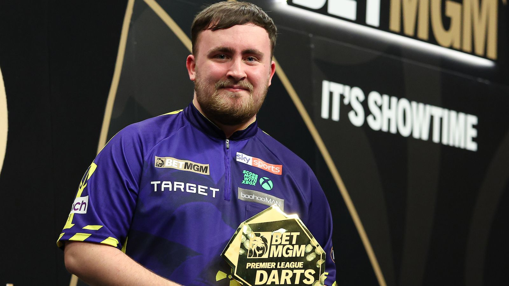

Egy több hónapon át tartó, 16+1 állomásból álló csütörtök esti sorozat, amely egy négyes döntővel (Play-Offs) zárul május végén. Nem ranglista-torna, de kiemelt presztízsű.
Az év harmadik nagy tornája.
Luke Littler volt az a második játékos, aki a Premier League döntőjében kilencnyilast dobott, Phil Taylor után.
Február – Május (csütörtök esténként)
Anglia - Skócia - Wales - Írország - Észak-Írország - Hollandia - Németország - Belgium
A döntő Londonban, az O2 Arénában